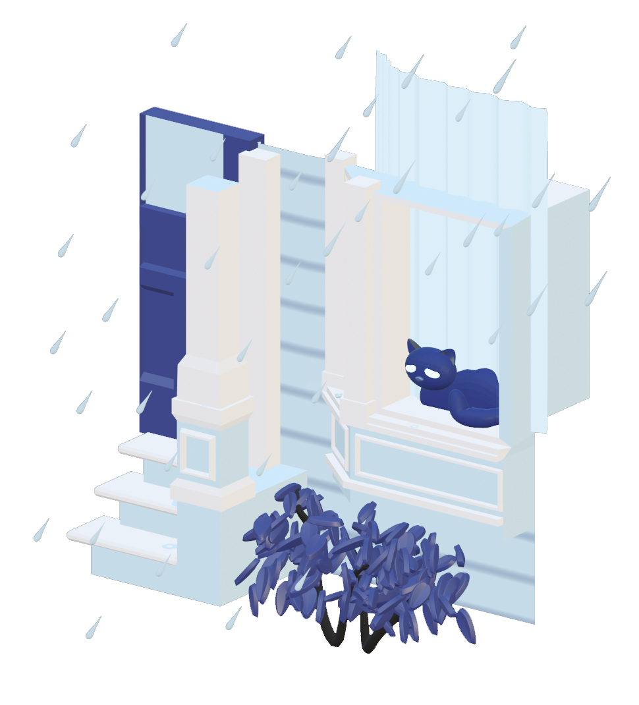

Blue Monday
Client: Personal Project, Mondays Challenge
My Role: Designer, Animator, 3D Modeling, Storyboard, Textures
Programs Used: Blender, Premiere
Whenever San Francisco experiences "atmospheric rivers," I feel very much like this cat in the window of an Edwardian home.
Visual Development
 3D Scene in isometric viewGuided by a prompt and color palette determined by Mondays Challenge, I built a 3D model set of the scene in Blender. I paid special attention to the cat's motion – with animation techniqes to emphasize disappointment.
Design Criteria:- A motion file that falls under the theme "Blue Monday"
- Duration: 5 seconds
- Colors:
#2B3467and#BAD7E9